Laser and Vinyl Cutting
Laser Cutting
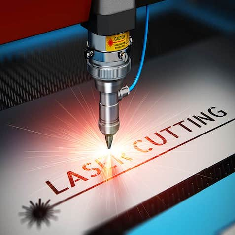Project description
The objective of this project was designing a parametric, press-fit model of building blocks which is
scalable in different ways, implemented with parameters in a software of our choice.
Workload
| What was done | Time spent[hours] |
|---|---|
| Deciding what to make | 2 |
| Designing and drawing | 8 |
| Preparing design for cutting | 1,5 |
| Preparing laser for cutting | 0,5 |
| Assembly | 1 |
| Documentation | 6 |
| Total work | 19 hours |
Preparation
I decided to use Autodesk Fusion 360 for this project. Even though I had not a lot of experience using it, there are plenty of tutorials online as well as it's available on MacOS which allows me to work on this project at home.Fusion 360 is one of many softwares from Autodesk and it's free for students. To download Fusion 360 you can click on the picture below.
Deciding what to draw
The first step was choosing what to draw and cut. I talked to my sister about this project and she told me about a dollhouse she wanted for her son. I liked the idea so I decided to try and make a dollhouse similar to the one she showed me. 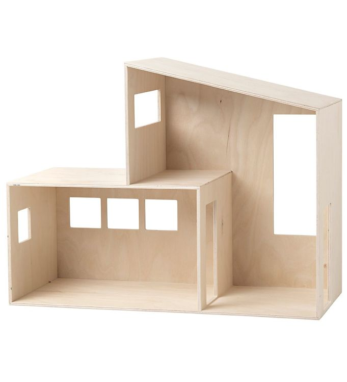
Now, since I hadn't used Fusion 360 much before, I needed to watch tutorials to learn how to make a finger jointed parametric part. Fortunately, the professor posted a link to a few tutorials on Youtube on how to do that. To watch that tutorial click here.Making the house
I knew I had a 500x500x4 birch plywood to cut in so I decided to designe the house so it would fit in two plates. I started to sketch how I needed each part to look like, see image of the sketch below: 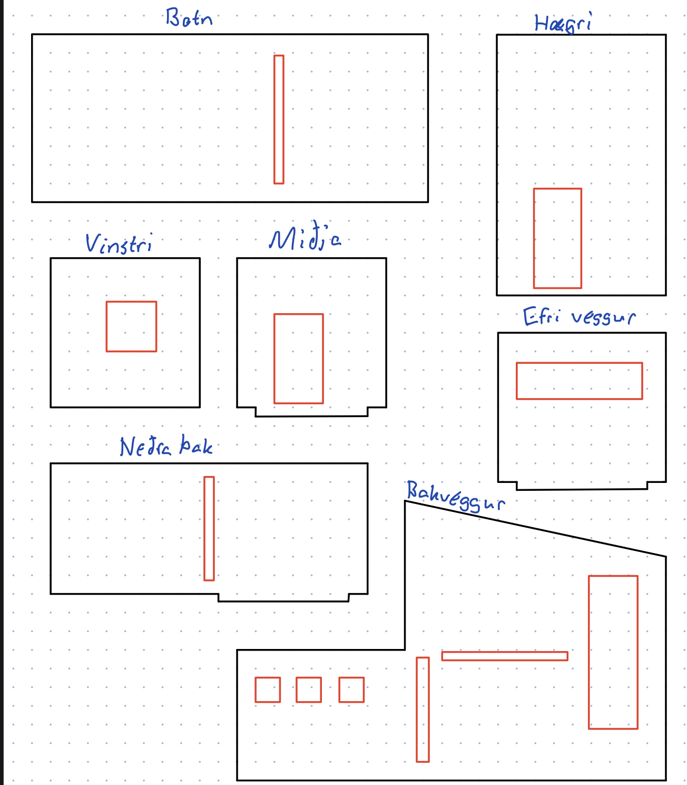 Then I had to figure out what lengths to use so it would fit in to 500x500 plywood plates. I knew the length couldn't be greater than one third of 500 since that was the only way to fit all the parts in these two plates, so that was the size constraint I had. I needed to define the parameters before I started to draw. To do that I clicked on modify and then change parameters and after doing that it wasn't complicated drawing the house. Since the house had a slanted roof I used the Pythagoran theorem to figure out the parameters of that. 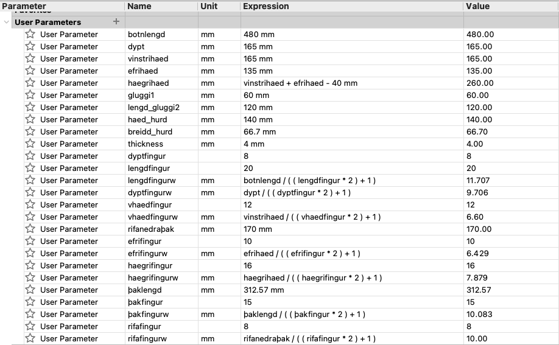 You can see all the parameters I used in this picture. The length was 480 mm, floor one was 165mm high, floor two was 135mm high and the width was 165mm. The reason I chose 165mm was that 165x3 is 495 which is just small enough so I could fit 3 parts in one row. Here you can see the finished product in Fusion360. 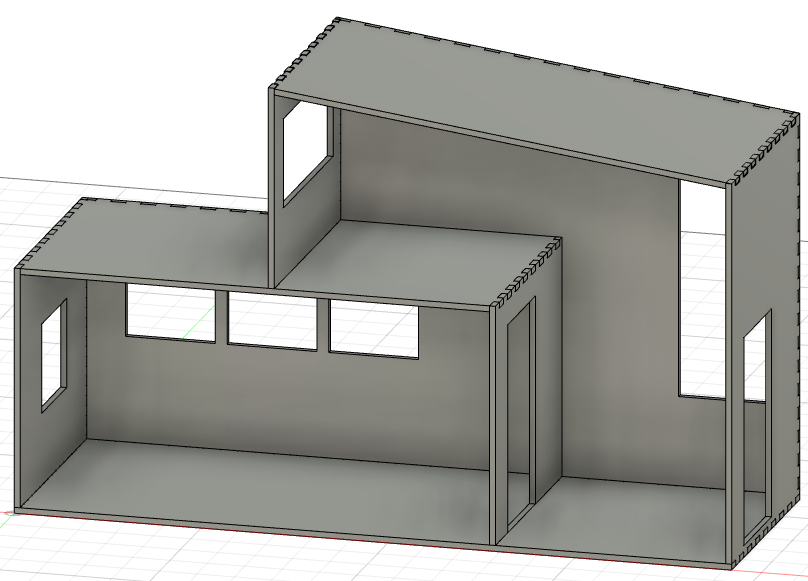Kerf
When I was finished designing the house I had to choose the right kerf for the cut. Before I did that I layed the components flat and arranged them in to 500x500 squares. I watched a tutorial on Youtube that showed how to do that. To watch that tutorial click here. I had done a Kerf test on the laser cutter and the result was that the Kerf for that cutter was 0,18.To set the Kerf and export it as a DXF file in Fusion360 I watched yet another Youtube tutorial and to watch that one click here.
Inkscape
Now that I had set the Kerf I used a software called Inkscape to convert it from DXF to PDF. Click the picture below to download Inkscape. To set the size of the paper I clicked on file and document properties and set it to 500x500 mm. Since I had already arranged the parts in Fusion360 it was really easy
to select the parts and drag them to the paper. Then I just saved it as a DXF and moved it to a USB key.
Since I had to use two plywood plate to cut it I did that twice. Below you can see how it looks as a DXF file (This is a pdf file to see it easier, but it looks the same).
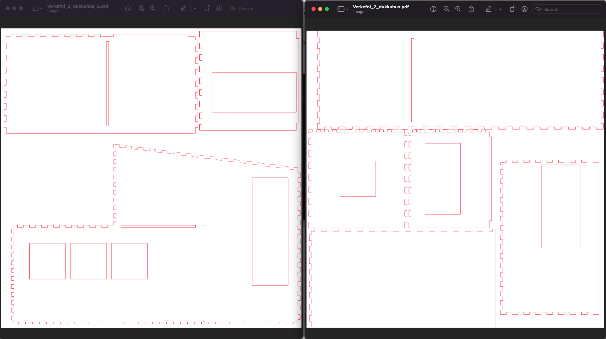
As you can see thers isn't a lot of space left to work with if it's supposed to fit in two 500x500 plates. Even if I had drawn it too big it wouldn't be a big problem
since I had defined parameters in the beginning and would only need to change a couple to scale it down. Still it was good to get it right the first time.
To set the size of the paper I clicked on file and document properties and set it to 500x500 mm. Since I had already arranged the parts in Fusion360 it was really easy
to select the parts and drag them to the paper. Then I just saved it as a DXF and moved it to a USB key.
Since I had to use two plywood plate to cut it I did that twice. Below you can see how it looks as a DXF file (This is a pdf file to see it easier, but it looks the same).
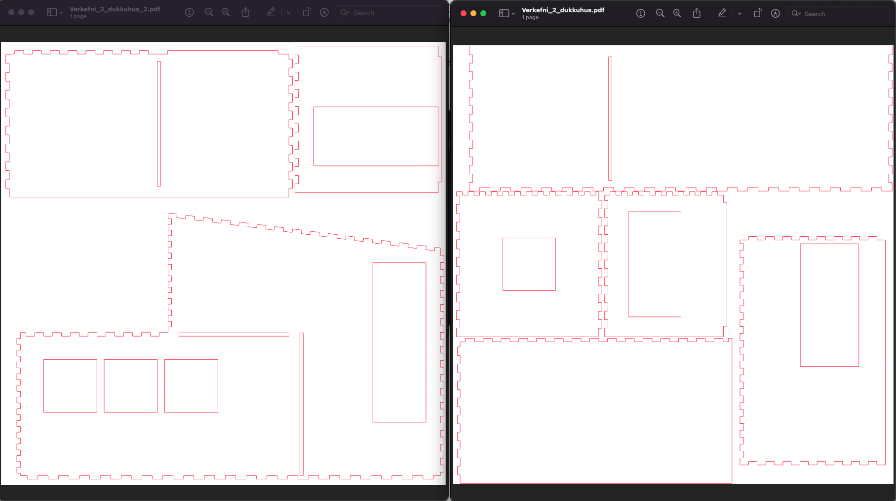
As you can see thers isn't a lot of space left to work with if it's supposed to fit in two 500x500 plates. Even if I had drawn it too big it wouldn't be a big problem
since I had defined parameters in the beginning and would only need to change a couple to scale it down. Still it was good to get it right the first time.
Cutting the object
I decided to cut only two parts at first to see if they would fit together, and if they wouldn't I would probably have a problem with all the parts. I cut the floor and one wall and put them together, here you can see a picture of the parts I chose to cut first: 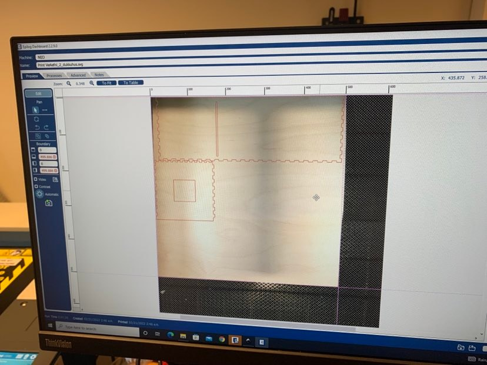 Those parts fit together like a glove which meant that the other parts would also fit. Now I cut the rest of the parts and started assemblying them. All of them fit together as expected except for the roof. On one side the "fingers" weren't there. I went back to fusion, fixed the problem and cut it again with no problems. Below you can see the finished product: 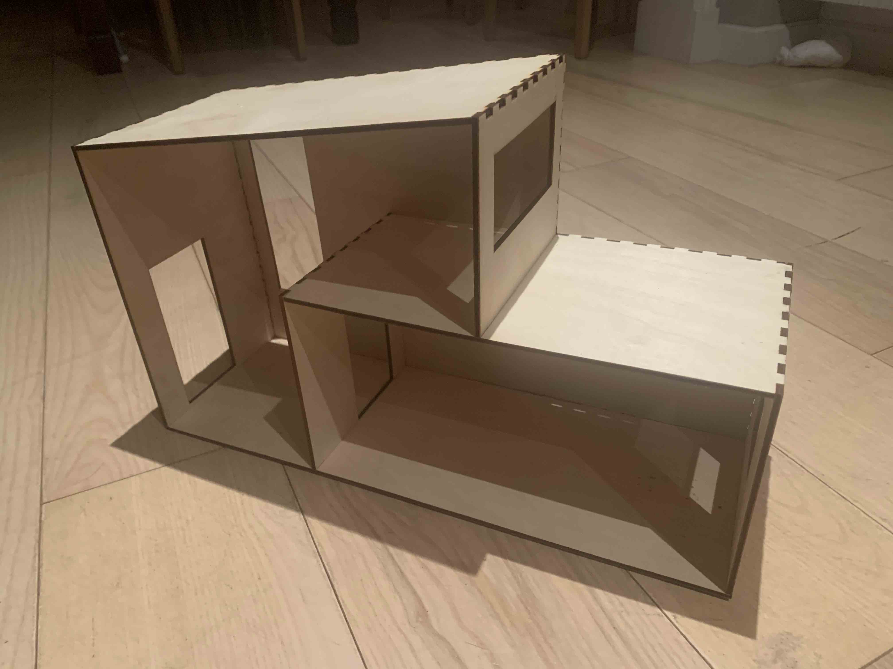 Now I just had to hope that my nephew would like it and it didn't take long for him to start playing with it, putting cars, tractors and farm animals in there. Below you can see a picture of the dollhouse in use: 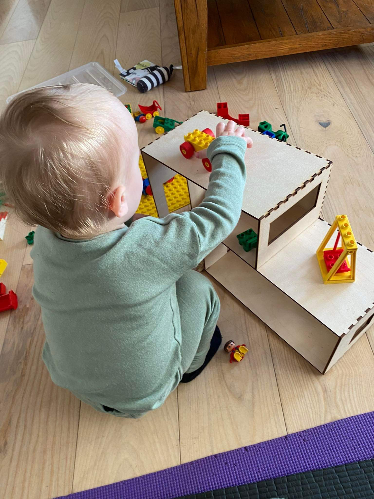Vinyl cutting
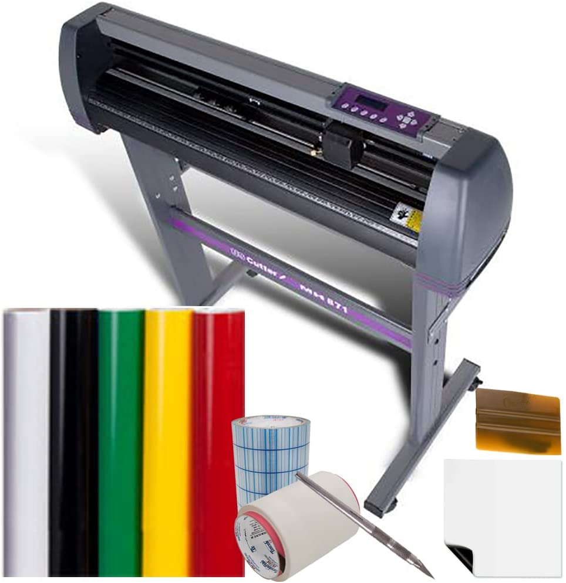Project description
The second part of this project was to make a sticker using a vinyl cutter. The only design parameter was that it had to fit in an area of 50x100cm.Workload
| What was done | Time spent[hours] |
|---|---|
| Deciding what to make | 1 |
| Designing and drawing | 0.5 |
| Preparing design for vinyl cutter | 1 |
| Preparing vinyl cutter | 1 |
| Documentation | 4 |
| Total work | 7.5 hours |
Design
I wanted to make a sticker which I could put on my computer. I decided to make the jupman logo, since I am a big basketball fan. The image I chose on the web can be seen down below, easily found by googling "jumpman logo black and white" To make this image into a vector file needed to make the sticker I watched a Youtube tutorial which you can see by clicking here. He starts to talk about pictures around the 2 minute mark of the video. In the video down below you can see how pixelated the image gets if you don't convert it to a vector file. Now I put the file to a usb key and opened it in the computer connected to the vinyl cutter. I opened the file in inkscape and put the stroke style width to 0,02 mm. Here you can see the sticker in inkscape: 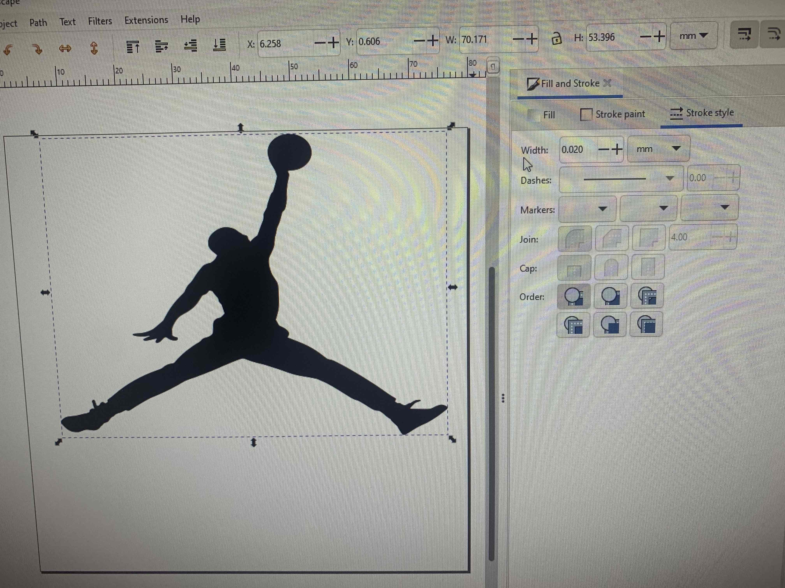 I saved it as a PDF file and printed and chose the vinyl cutter as the printer. Here you can see the printer settings: Now all I had to do was print it. It came out well so here you can see the sticker when finished and after I put it on my computer.
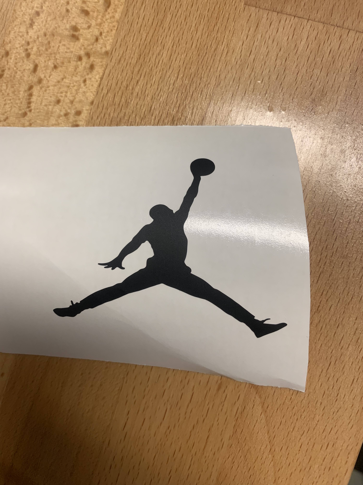
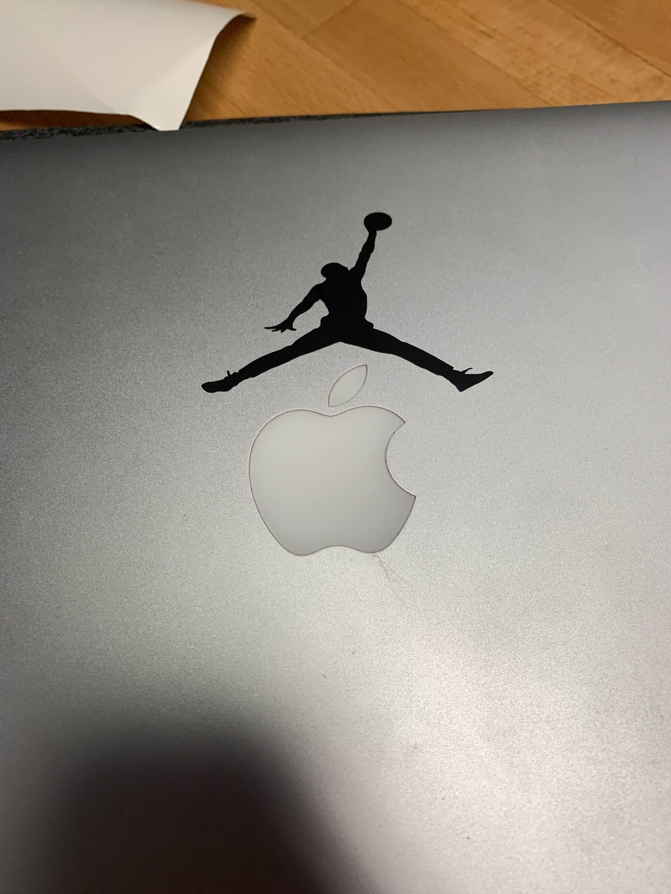
Now all I had to do was print it. It came out well so here you can see the sticker when finished and after I put it on my computer.
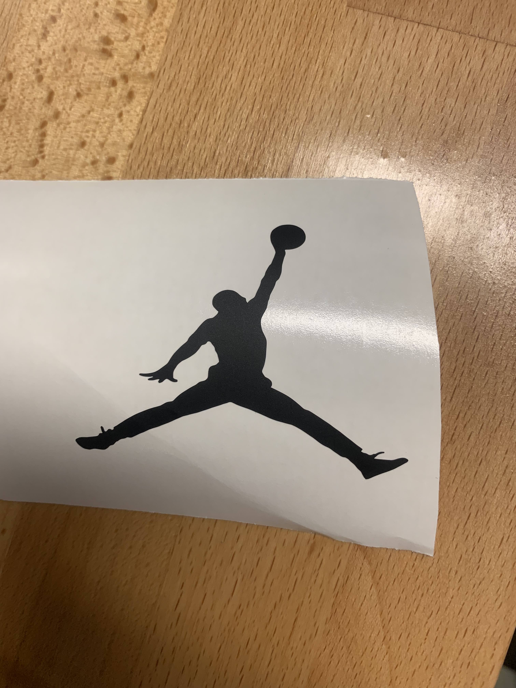
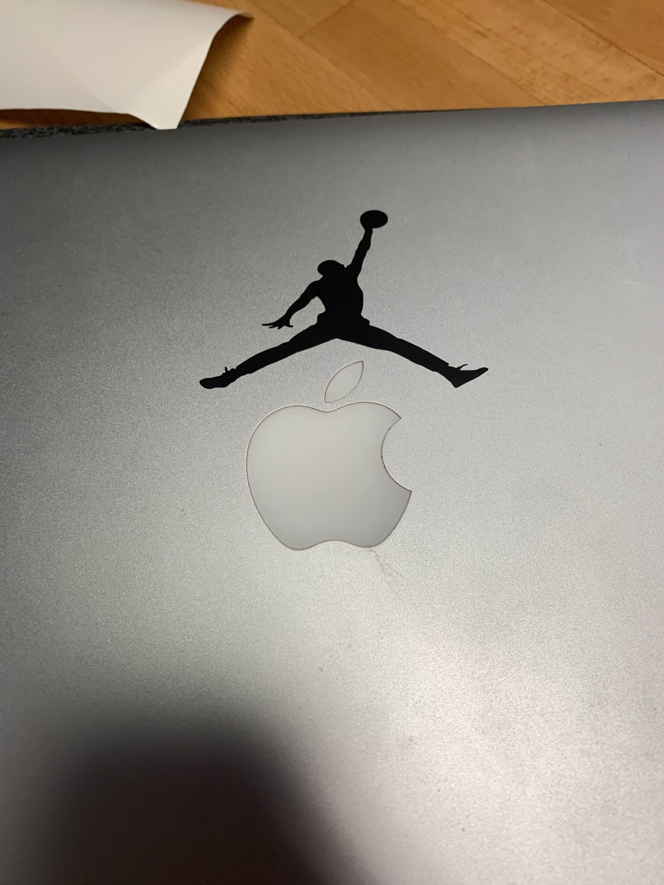